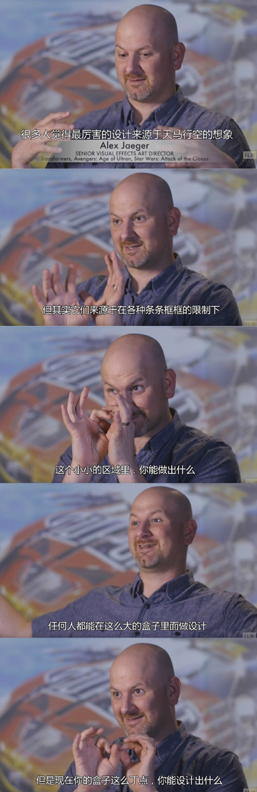
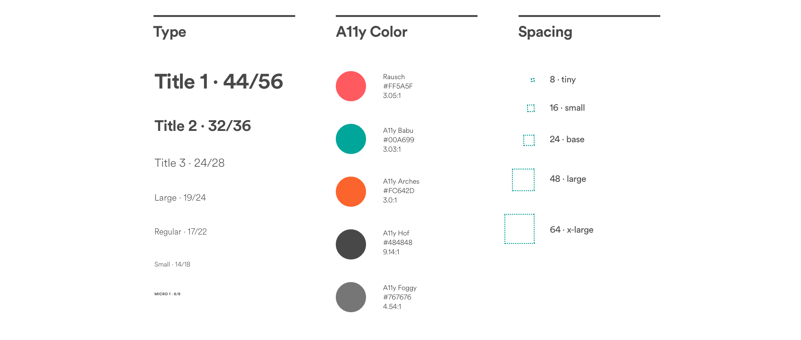
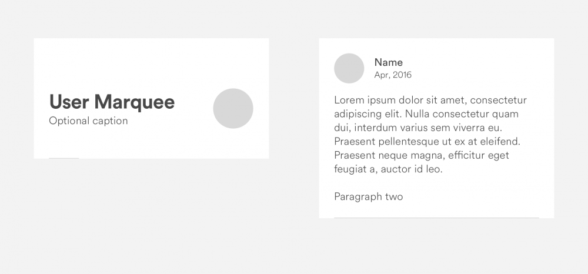
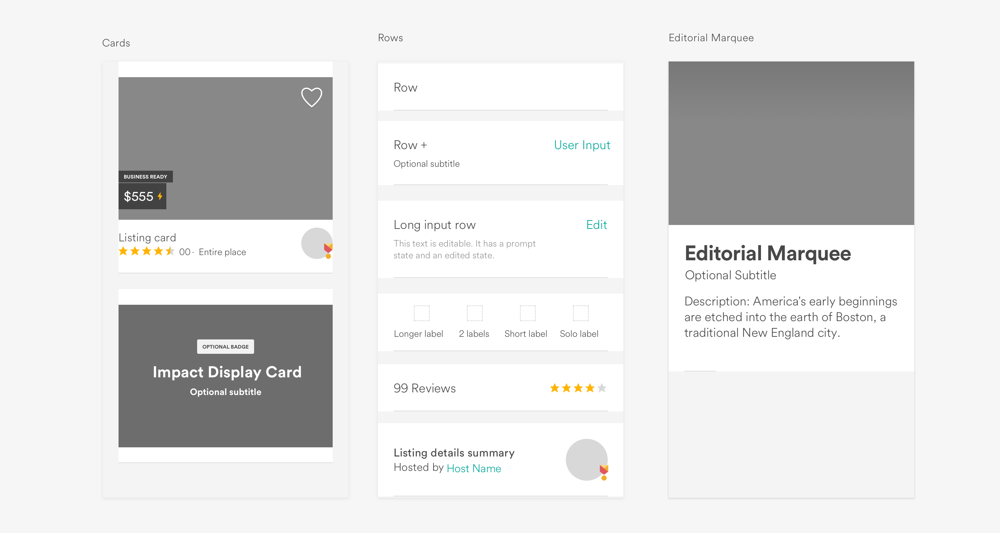
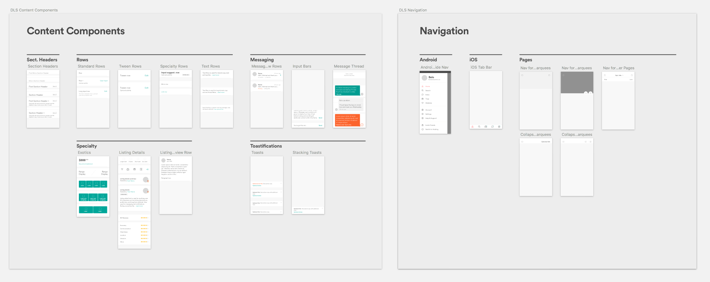
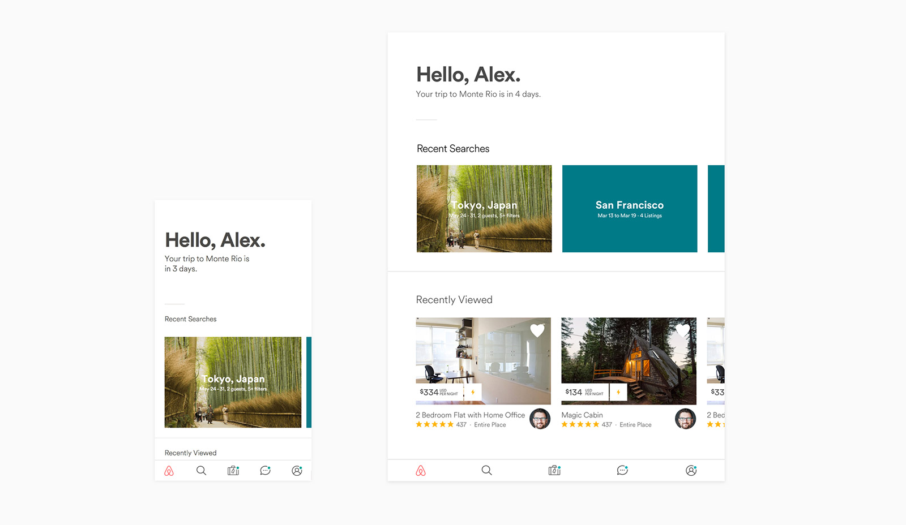
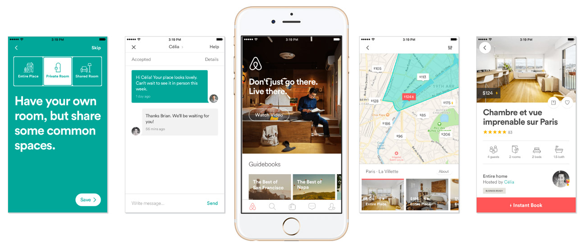

Design System + Sketch 工作流上的思考 01
最近在做相关工作上设计语言的搭建，看了很多国内外对于设计语言的总结，接下来一个月的时间会对这些文章做出译文，并且把在工作流上应用遇到的问题和思考做一个总结。
为什么要做Design System
作为在设计团队中的管理，在产品项目设计中越来越多的人参与进来的时候可以感觉到在设计执行上如果没有一个很明确的设计系统规范，会对输出的设计质量、开发的工程量、用户体验、品牌造成巨大的影响，并且是随着时间的推移，不知不觉中产出的偏差性导致很多问题无法追述。设计系统能够更好的推动设计项目的流程化，保证设计输出质量，帮助设计师更加宏观的看待问题，
更好的多纬度去思考对内对外的统一性，（例如在前端开发的工作流中，如何更好的去利用组件化模块来做设计，让设计与开发在Components（组件）和 Patterns（模式）上达成共识）。
- 方便在大型体系下建立设计文化
- 辐射与传播设计思想（抽象的）更加容易
- 保证输出质量及视觉统一性
- 设计规范的建立与规范本身的优秀与否能够看出设计团队的实力
- 用户层对某产品的体验一致性得到落地
- 塑造品牌调性
- 迭代与交接可以更加无缝
- 减少设计出错率

所谓“设计”，就是在一系列约束条件下构建解决方案的过程。
规范不是标注，它比标注更宏观，好的规范总是统一方向与基本参数，确能预留无数的设计可能性来保证扩展性。这样的设计规范是优秀的。而相对讲，一个优秀的设计师，也总能在某种同样的条件下设计更精彩的方案。
在往后的日子也会把工作流上DesignSystem & sketch（symbol和libray）踩过的坑和分享到Blog上来。
参考了包括了：
Brad Frost的 - Atomic Design
Airbnb的 - Airbnb Design System
蚂蚁的 - Ant Design
TeamBition - Clarity Design
接下来是Airbnb Design 的一篇译文
这是译文地址Building a Visual Language：
建立一个视觉语言
我们新的设计语言的幕后
Karri Saarinen Airbnb 首席体验设计师-Twitter
本文是我们新设计语言系统系列中的一部分。Karri最近在设计师新闻“Ask Me Anything”的采访中回答了有关这个话题的问题。点击这里阅读这片报道
在软件开发和设计方面，我们经常被要求提供一次性的解决方案。有时我们在有限的时间之内工作，有时候我们还没达成一致的目标。这些一次性的解决方案本质上并不坏，但是如果它们不是建立在坚实的基础之上，最终我们会发现自己不得不偿还技术和设计上累计所的代价。
视觉语言就像任何其他语言一样。如果语言不被使用者共享和理解(达成共识），就会产生误解。随着产品或团队的成长，这种模式的挑战会越来越复杂。（其实就是你所制定的设计语言并不是一层不变的，而是要随着产品的迭代、业务的变化而变化）
设计一直是主要的系统，以及如何以可拓展和可重复的方式去创建产品。从Pantone色到飞利浦螺丝钉（这是什么梗没查到），这些系统使我们能够管理混乱，创造更好的产品。数字产品可能是实施这些系统最好的地方，但它通常不被视为优先要做的事。
一个统一的设计系统对建立更好更快是至关重要的，更好：是因为有连贯的体验更容易让用户理解；更快：是因为它为我们工作流上提供了共同的语言。
为什么我们需要设计体统
便于团队管理，达成共识、保证产出质量
Airbnb 在过去的几年经历了高速的增长。目前我们的设计部门由近十几个职能部门和成果部门（输出）组成。很明显我们需要更系统的方式来指导和利用我们共同的努力。虽然我们认识到了公司内部的这些挑战，但是我相信它们是更大互联网行业的症状。
・过少的约束
软件设计比其他设计受到的物理限制要少，这样的情况使得同一个设计挑战可以有多样的解法，但是也带来了散乱的用户体验。作为产品所有者和设计者，我们必须创造和遵循我们自己的约束。
・多个设计师和利益相关者
软件通常是由团队组建的-有时是令人难以置信的庞大团队。随着越来越多的人加入到团队中，创造连贯的用户体验的挑战将呈指数级增长。而且，随着时间的推移，不管多么一致或小的团队，不同的人将会贡献出新的解决方案和风格，导致用户体验的偏差。可能有些刚开始微小不可见的，但是时间越长暴露出来的问题也会越来越大，并且很难去追溯历史原因，也将耗费协作成本，慢慢的变成很多小公司产品迭代上的沉默成本
・多平台
我们需要在多种平台和设备上运行我们的产品。保持功能和设计的同步需要付出巨大的努力，通常需要在这些平台上重复相同
的工作。
・软件连续性
另一个独特之处在于，虽然它可以被认为是一种产品，但是它并不会像传统的消费品那样被磨损和被取代。即便是一家历经数次产品转型的公司，多年之前编写的代码和设计，如今依然会在很多地方存在。这就需要不断的维护和升级。
开始工作
为了解决这些挑战并使我们的决策过程保持快速，我们组成了一小组设计师和工程师。我们清理了日历📅，在Airbnb总部外租了一个工作室，并致力于设计和建造设计系统（Design language System）。
我们为DLS设定的目标是创建一个更美观，更易于使用的设计语言。我们的设计应该是统一的平台，通过定义明确的可重复使用组件（components）来提高效率。为了集中我们的努力，我们将初始范围缩小到原生平台上（iOS和Android）。
我们开始整理和打印我们的许多新旧设计。在看板上放置流程，我们可以看到用户体验在哪里被破坏哪里我们需要开始进行修改。我们认为通过解决问题是最好的开始。我们每个人都专注于屏幕或产品领域进行重新设计，并且我们建立了一些原则来指导我们进行个人的设计：
统一性： 每一部分都是更大整体的一部分，应该有规范的积极打造系统，不应该有孤立的风格或异常值。
普遍性： 全球范围内的社区广泛使用Airbnb。我们的产品和视觉语言应该是受欢迎和易用性的。
标志性： 我们专注于设计和功能，因此在这两方面，我们要即大胆又清晰。功能及信息交互上的层级关系
对话性： 呼吸对生命如此重要，我们要把同样的设计理念融入到产品里面，通过更容易理解的方式与我们的用户进行交流、沟通。
奠定基础
在开始设计冲刺前，我们已经创建了一个基本的风格指南，称之为基础。这个基础粗略的定义了我们的排版、颜色、图标和信息架构。可以说，这个基础是指导我们工作不可缺少的东西，它让我们有了一个统一的方向，也让我们各自有足够的空间独立探索一些创造性设计解决方案。这样，我们觉得我们都在一起工作，朝着同样的想法。在每天结束的时候回顾我们协作完成的工作，我们开始看到模式的出现。我们在必要时纠正了错误，并开始定义我们的标准化组件。

创建组件
传统上，许多风格指南将组件定义为原子组件，然后用它们构建更复杂的分子。从理论上讲，这很好地创造出连贯而灵活的系统。然而在实际中，经常发生的是这些可重复使用的原子被以许多不同的方式使用，从而允许创建各种分子。再次为各种杂乱无章的用户经验打开了大门，使系统难以维护。
我们不是依靠个别的原子，而是开始将我们的组件看作是一个有机体的元素。他们有一个功能和个性，由一系列属性定义，可以与他人共存，并可以独立演变。统一的设计语言不应该只是一套静态的规则和个别的原子，而应该是一个不断发展的生态系统。
统一的设计语言不应该只是一套静态的规则和个别的原子，它应该是一个不断发展的生态系统。
例如，我们的用户头像元素可能最初是由风格指南定义的，但是它在平台中的最终用途可能需要数百个排列组合，因此很难成功更新头像中的头像元素。我们如果想要解决这个问题，必须确保更新之后不会影响其他页面功能。

每个组件都由它所需的元素（如标题，文本，图标和图片）定义，有时可能包含可选元素。这些元素都在Sketch文档和代码中定义。我们不允许分隔线本身单独存在，而是要求每个组件都有一个分隔线，然后基于视图逻辑就可以看到或隐藏分隔线。

编译组件库（library）
在创建这些组件时，我们将它们收集在一个名为“库”的主文件中，我们在整个设计过程中提到这个文件。一两个星期后，我们开始看到在迭代设计时使用该库的巨大的生产力飞跃。有一天，我们的团队利用我们图书馆提供的框架，在几个小时内创建了近50个屏幕，如此高的效率完全得益于我们领先的设计框架和组件库。
随着组件库里内容越来越多，我们开始把有类似元素的独立组件进行组织归纳进“artboard（画板）”，这些画板之后会根据不同类型进行再分类，包括：导航，移动标签，内容，图片和专业。

我们还专门为手机操作系统（iOS和安卓）创建了一套组件，并使之适应平板电脑规格。平板电脑组件和移动手机的基本相同，而在技术层面上，代码基本上是以两种不同的风格出现一次而已。有了这个系统组件可以在外观和定位上有所不同，类似于响应式设计在网络上的工作方式。然后，设计师可以使用通用组件设计一个屏幕，并且可以轻松适应不同的屏幕尺寸以及iOS和Android。
对于平板电脑，我们创建了一些简单的布局概念，如焦点视图，它将内容集中在页面，模式和2列和网格布局上。

所有组件和视图都是用我们Airbnb自己的技术视图框架构建的，该框架可以处理这些风格、状态、以及适应度。
经验教训
我们知道，构建可视化设计语言是个极具挑战的项目，它意味着我们应用程序中很多视图需要重新设计和重新开发。但是我们依然努力实现了设计系统创建，并在4月17日发布了全新的App应用。正如其他任何项目一样，我们希望有些事情做的与众不同。

不是所有组件都是对等创建的。 在绝大多数App应用里，总有一些组件使用的频率较高，也因此会重复出现。对我们Airbnb来说，这些组件是App里的网格行（或是单元格）。回想起来，我希望我们可以花更多时间去思考如何设计这些行，并设计出更强大的样式集合和组件。最后，我们会用不同类型的设计方法去解决一些矛盾。
Sketch： 我们期初尝试在Sketch里创建这些组件作为符号，但最终导致了混乱。甚至到现在，我们的Sketch文件有时依然很难维护。如果未来有机会，我们希望可以找到更好的方式去维护和创建新组件。作者在写这篇文章的时候sketch library 功能还没有出，现在可以利用symbol和library并配合sync同步软件（国外dropbox、国内坚果云）来进行部门内部协作
文档系统： 由于这个项目要求我们在很短时间里完成，结果导致了我们忽略了一些文档处理流程。由于缺少文档，设计过程会无可避免地产生一些迷惑。就像编程一样，他们创建的文档系统是开发过程中最重要的一个环节。或早或晚，文档系统都要去做，重要的是，创建文档的过程，也会帮助我们在做决策的时候更加顺畅。文档系统的作用：1.内部协作规范性 2.如果有新人加入可以快速的通过文档来了解协作流程，遇到问题可以利用文档进行排查梳理；
归纳总结
创建一个可视化设计语言是个无比艰巨的任务，需要我们产品团队付出巨大努力才能完成。但是我们发现，开发我们自己的设计语言系统是非常有价值的，它值得我们投入，因为会给整个产品，甚至整个公司带来巨大飞跃。
由于设计语言和代码经常是共享的，我们现在可以在大致相同的时间在所有本地平台上构建和发布功能，极大地提高了效率，开发工作因此也变得更快。我们的产品工程师，现在可以专注与产品的功能逻辑，再也不用为编写视图代码而费心思了。此外，如今Airbnb公司的工程师和设计师也可以分享共同语言。
设计师们也对我们的系统感到非常兴奋，它能让产品审核人员专注于设计的实际概念和体验，而不是抓一些边角料的东西，比如填充，颜色和类型选择，等等。Airbnb设计语言系统让我们对产品的视觉风格有了共同的理解，并简化了对单一系统的贡献。这个设计语言系统也让我们所有人能以更快的速度和更低的成本开发产品原型或对产品想法进行验证。
我相信，在这些系统的帮助下，未来我们可以更专注于实际用户体验，并且开发出我们想要的概念。这样让设计更加的把精力放在了如何用设计去解决产品问题上，如何设计出更好的用户体验，而不是多余的那些设计规范、颜色、字号上的扯皮。
别的一些Airbnb 相关性文章推荐：
Airbnb设计副总裁Alex Schleifer: